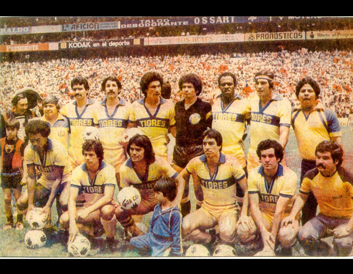

HISTORIA
El Club Tigres UANL, nacido oficialmente el 7 de marzo de 1960, surgió de una metamorfosis del equipo Jabatos, fundado tres años antes y cedido a la Universidad Autónoma de Nuevo León.
El equipo se había formado con jugadores de los llanos y las ligas amateurs del futbol regiomontano por convocatoria de Lauro Leal, César M. Saldaña, Manolo Pando y Ramón Pedroza Langarica, quienes los llevaron al Deportivo Anáhuac.
El Club de Futbol Nuevo León –conocido también como Jabatos o Club Esmeralda- debutó en la Liga del Torneo 1958-59 de Segunda División y sorprendió con un buen papel deportivo pero también empezó a sufrir problemas financieros.